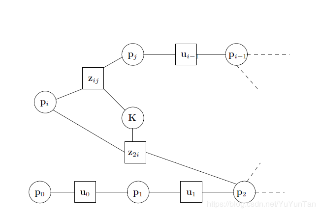
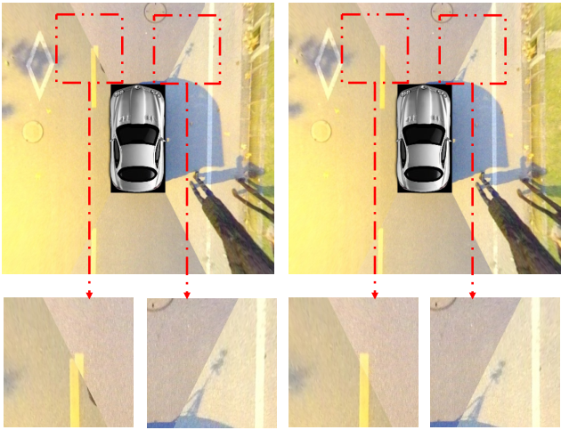

|
ROECS: A Robust Pipeline Towards Online ExtrinsicsCorrection of the Surround-view System Tianjun Zhang1, Lin Zhang1, Ying Shen1, Shengjie Zhao1, Yicong Zhou2 1 School of Software Engineering, Tongji University, Shanghai, China 3 Department of Computer and Information Science, University of Macau, Macau |
Introduction
This is the website for our paper "ROECS: A Robust Pipeline Towards Online Extrinsics Correction of the Surround-view System, "
Source Codes
Use git to clone the repository:
git clone git@github.com:z619850002/ROECS.git
A surround-view system (SVS) usually consists of four to six wide-angle fisheye cameras. These cameras are mounted on the vehicle facing different directions, so as to realize a 360-degree-perception of the surrounding environment around the vehicle. By calibrating the SVS´s intrinsics and extrinsics accurately, relative poses between cameras can be determined and then a high-quality surround-view can be synthesized in real time. The surround-view cannot only broaden the driver´s view to eliminate blind areas, but also can be employed in parking-slot detection, autonomous parking, pedestrian detection and other related driving assistance tasks.
Dataset
(pw: 26yo)
We collected four groups of surround-views, and for each group, there are one hundred frames. Each group of frames corresponds to a specific environmental condition, which are characterized by (1) with rich tex- tures, (2) with relatively rich textures, (3) with sparse textures, and (4) with obvious mismatched objects, respectively. All experiments mentioned in the paper are based on these data.
Dependencies
Note: all these codes are implemented in C++ 11. We have tested the library in Ubuntu 14.04, but it should be feasible to compile in other platforms.
1. OpenCV
We use OpenCV to manipulate images and features. Dowload and install instructions can be found at: http://opencv.org. We use 3.4.1, but it should also work for other version at least 3.0.
2. Eigen3
Download and install instructions can be found at: http://eigen.tuxfamily.org.
3. g2o
This is a graph optimziation library. We use g2o library to perform non-linear optimizations. More details can be found at https://github.com/RainerKuemmerle/g2o/.

4. Sophus
Sophus is a Lie algebra library. More details can be found at https://github.com/strasdat/Sophus.
Typical Correction Results
Comparison of surround-views before and after extrinsics correction by ROECS in various environments.

Photometric Errors Before and After the Correction
Average photometric errors over all surround-views corresponding to different groups of data.
Last update: Jan. 31, 2021